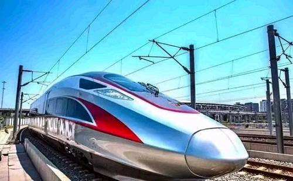
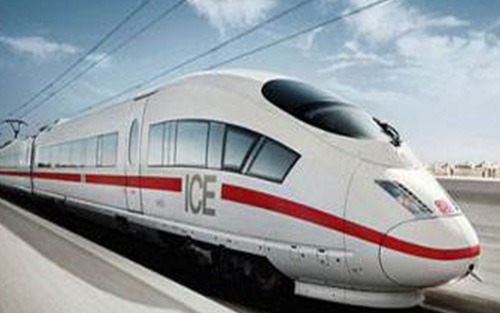
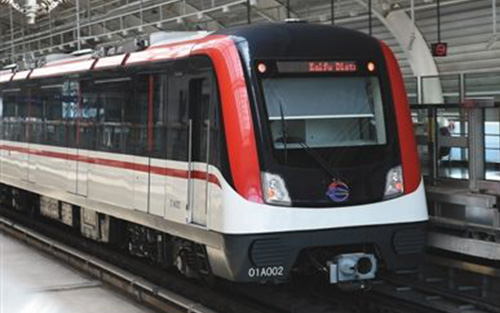

永磁高铁
列车优点
高铁用永磁电机成本比交流异步电机成本增加约10%，
通过节省动拖比，比如一辆原来需要6动2拖的列车，可以只采用4动4拖，节省的2辆动车的牵引系统会使得安装永磁电机的整列车成本反而降低20%。
牵引系统能耗约占轨道交通系统总能耗的40%~50%，永磁同步牵引系统相比于异步牵引系统可实现节能9.61%。如果96条轨道交通线路全部采用永磁同步牵引系统，每年新线运营能耗将节约1.92亿元。
“永磁高铁” 意味着什么？
国内高铁动力应用上的突破，将使中国高铁在世界舞台上更具核心竞争力。
永磁高铁 — 展示



